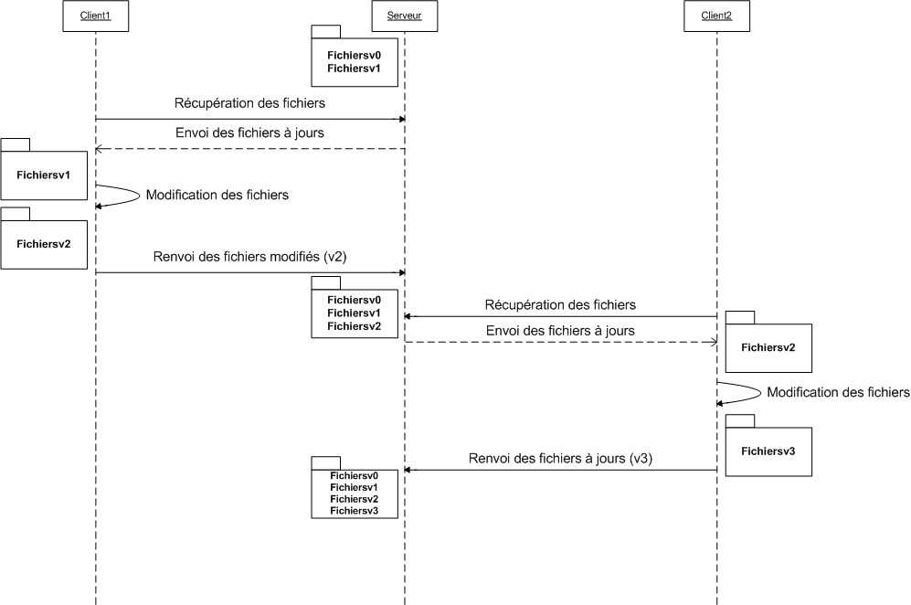
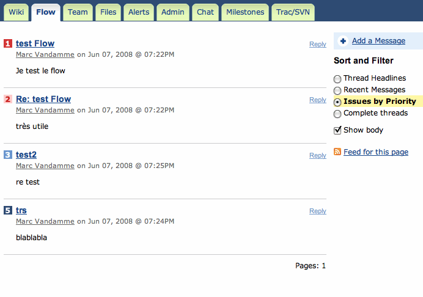

Gérez vos projets à l'aide du gestionnaire de versions Subversion
Subversion ... Mais qu'est-ce donc que cette chose ? Que se cache-t-il derrière ce mot un peu barbare ? Tout au long de ce tutoriel, vous allez apprendre à utiliser cet outil, somme toute très puissant, qu'est Subversion. Ses utilisations sont très variées et il est le plus souvent connu par les développeurs utilisant les méthodes agiles, mais il est utilisable quel que soit le projet que vous voulez mener. Que vous soyez seul ou plusieurs, pour un gros ou petit projet.
À la fin de ce tutoriel, vous saurez :
utiliser le client Subversion sous Windows...
... mais aussi sous Mac...
... et sous Linux (alleluia) !
créer un serveur Subversion pour héberger vos projets tout seuls comme des grands ; :soleil:
et enfin paramétrer correctement le serveur Subversion.
Une fois que vous aurez fini ce tutoriel, n'hésitez pas à aller chercher de la documentation pour compléter votre formation, surtout que pour l'instant le tutoriel est loin d'être fini.
Plutôt que de foncer tête baissée dans la documentation et tout le reste, il faut déjà connaître la base.
Nous allons donc faire un peu de "blabla" pour comprendre de quoi il s'agit. J'essaierai de faire le plus court possible pour que vous puissiez passer à la pratique au plus tôt, mais il faut bien comprendre que la théorie est indispensable si vous voulez comprendre quelque chose. Si l'on ne comprend pas le fond des choses, alors on ne comprend rien. Le but de ce chapitre est de vous présenter l'architecture afin que vous compreniez ce qu'il se passe sur chaque machine lors de la pratique.
Comme l'indique le titre du chapitre, Subversion (que je nommerai souvent par son abréviation SVN) est un système de gestion de versions des fichiers. :waw: Quoi ? Ça ne vous épate pas ? C'est vrai que présenté comme ça, le produit ne donne pas vraiment envie. C'est pourtant ce que c'est ! Mais, rassurez-vous, je n'aurais pas entamé un big-tuto juste pour vous présenter un bête gestionnaire de versions, j'aurais écrit deux lignes dans un mini-tuto qui n'aurait jamais été validé et puis il serait parti à la poubelle. Non, le but est donc bien de vous présenter un gestionnaire de versions intelligent.
Tout d'abord, une petite définition du système de gestion de versions. Faisons un petit tour sur Wikipedia, nous obtenons le résultat suivant :
Citation : Wikipedia
Un logiciel de gestion de versions est un logiciel de gestion de configuration permettant de stocker des informations pour une ou plusieurs ressources informatiques permettant de récupérer toutes les versions intermédiaires des ressources, ainsi que les différences entre les versions. Un logiciel de gestion de versions agit sur une arborescence de fichiers afin de conserver toutes les versions des fichiers, ainsi que les différences entre les fichiers. Ce système permet par exemple de mutualiser un développement. Un groupe de développeurs autour d'un même développement se servira de l'outil pour stocker toute évolution du code source.
Moi, j'ai un gestionnaire de versions sur mon ordinateur que je trouve très complet ! Qu'est-ce que SVN peut m'apporter de plus ?
Soyons clairs : comme gestionnaire de versions personnel sur votre ordinateur, SVN ne va probablement pas vous apporter grand-chose.
Mais ne soyez pas déçus, il fait en réalité bien plus que de la simple gestion de versions. Dès que vous serez plusieurs et / ou mobile(s), il va devenir très intéressant.
Premièrement, sachez qu'il est possible de l'utiliser en ligne. Les fichiers que l'on veut versionner peuvent donc être accessibles via un réseau (par exemple Internet). C'est là que les choses deviennent intéressantes ! Du fait que tout est disponible à l'aide d'une connexion Internet, il est donc permis à plusieurs personnes d'utiliser ce système en même temps... Je ne sais pas si vous vous rendez compte, mais c'est extrêmement puissant pour le travail en équipe (surtout si l'équipe est dispersée).
Le principe de fonctionnement est très simple, il est basé sur un système client / serveur "basique". Nous allons passer en revue trois configurations standard.
Première configuration : un ordinateur client et serveur
Ce cas n'est pas souvent utilisé (personnellement, je ne l'ai jamais vu). Comme on peut le voir sur le dessin, le même ordinateur sert à la fois de serveur pour stocker toutes les données, et de client pour la présentation des données.
Deuxième configuration : deux ordinateurs en LAN
Ce cas est déjà plus courant, mais ce n'est pas non plus le plus utilisé. On peut tout de même se rendre compte qu'il n'est pas obligatoire de passer par Internet.
Troisième configuration : le serveur et le client sont tous les deux connectés à Internet
Ce cas est le plus fréquemment utilisé, et c'est d'ailleurs là que SVN montre toute sa puissance. Déjà, on voit que, du fait du passage par le Net, le client peut utiliser ses données où qu'il soit, du moment qu'il dispose d'une connexion Internet. Mais ce n'est pas tout ! Vous aurez compris que le serveur et le client ne sont pas au même endroit géographique... Le serveur agit donc également comme serveur de backup, des fois qu'une bombe atterrisse sur votre ordinateur personnel et que vous perdiez toutes vos données.
Si je vous ai présenté les trois configurations, c'est aussi pour vous montrer qu'on peut les fusionner (à partir de maintenant, à la place de fusionner, je vais employer le terme merger pour vous habituer au vocabulaire SVN - anglais en gros). Comme je vous l'ai dit, il est possible pour plusieurs personnes d'utiliser le système en même temps, ce qui peut nous donner (par exemple) le schéma suivant :
Ceci est bien sûr un exemple ! Tout dépend de qui doit pouvoir accéder aux fichiers et les lire et / ou les modifier.
Ok, génial, on peut mettre plusieurs ordinateurs, mais comment ça marche et quel est le rôle de chacun ?
Le principe est le suivant :
le serveur garde en mémoire toutes les versions de tous les fichiers qui ont été utilisés sur lui. Ces fichiers utilisés sont les fichiers que l'on veut versionner ;
le client, lui, va télécharger les fichiers à jour sur le serveur afin de pouvoir travailler dessus localement. Une fois qu'il aura fini d'apporter ses modifications, il va envoyer la nouvelle version des fichiers au serveur qui va les stocker pour la personne suivante qui voudrait les utiliser.
Et voilà, ce n'est pas plus compliqué que ça. Toute la théorie est là : si vous avez bien compris le rôle de chacun, alors vous avez tout compris. Pour ceux qui n'ont pas encore bien saisi, voici un petit schéma explicatif.

Mais pourquoi le nom du fichier change-t-il ?
Et pourquoi reste-t-il les versions v0 et v1 sur le serveur et non sur le client ?
Et puis comment le Client2 sait que le Client1 a renvoyé le fichier au serveur ? Que se passe-t-il s'il le prend avant que le client 1 ne le renvoie ?
Et puis c'est naze ce truc, je fais la même chose avec un serveur FTP ! Il apporte quoi en plus, le logiciel ?
Ho là !!! Une chose à la fois, petit scarabée Zér0. Ce schéma n'est pas exhaustif et il est aussi très simplifié et idéalisé pour bien comprendre. Je vais répondre aux questions une par une.
Les noms de fichiers ne changent pas en réalité, j'ai juste ajouté la version à côté pour bien comprendre que le fichier v1 - version 1 - avait été changé par rapport à la v0 - version 0 - (correction des fautes d'orthographe, par exemple). Donc le nom de fichier ne change jamais (sauf si vous le demandez explicitement).
Comme je vous l'ai dit plus haut, le serveur sert de source de données alors que les clients ne sont là que pour afficher à l'utilisateur ce dont il a envie (donc besoin). Les clients ne possèdent donc que les derniers fichiers (ceux qui sont à jour) sauf demande explicite de leur part. Le serveur, en revanche, doit pouvoir envoyer au client n'importe quelle version s'il le demande. Il est donc normal qu'il possède toutes les versions de tous les fichiers.
Le Client2 récupère le fichier après que le Client1 l'a remis sur le serveur. Bien sûr, ce n'est que la présentation du cas idéal, rassurez-vous : SVN gère le cas où le Client2 récupère le fichier avant que le Client1 ne le renvoie, mais on verra ce cas plus tard.
Il est vrai que pour le cas de figure que je vous ai présenté, un serveur FTP ferait l'affaire. Ce qui fait la puissance de SVN est sa gestion des conflits lorsque deux personnes modifient un même fichier chacune de leur côté et essaient de remettre les deux versions différentes sur le serveur (on appelle ça un conflit). Enfin bref, il est vrai que beaucoup de choses pourraient être faites par un serveur FTP, à une chose près, c'est que SVN fait ça automatiquement, il n'y a donc qu'à cliquer sur un seul bouton (allez, peut-être deux) pour mettre tout le projet à jour.
On peut maintenant se poser la question des contraintes techniques.
Que faut-il pour faire fonctionner le système ?
Comme on l'a vu, il faut un serveur (une machine avec un serveur Subversion installé), mais aussi un client (une machine, éventuellement la même, avec un client Subversion installé).
Pour vous rassurer dès maintenant, comme vous avez pu le voir dans l'introduction du tuto, on peut faire fonctionner SVN sur Mac, Linux et Windows, comme ça il n'y aura pas de jaloux.
Mais est-ce qu'il faut que le client et le serveur tournent sous le même système d'exploitation ?
Non, bien sûr que non, aucune contrainte entre le client et le serveur, si ce n'est qu'ils doivent être connectés l'un à l'autre (qu'importe le moyen).
Vous voyez donc qu'on peut faire cohabiter les trois systèmes d'exploitation sur le même projet.
Et pour le côté serveur, pas de jaloux non plus, Subversion fonctionne sur les trois.
Donc voilà, bilan : pour l'instant, comme on ne touche pas encore au côté serveur, il n'y a pas de problème de compatibilité entre les systèmes d'exploitation ni entre les programmes. Chacun pourra donc faire ce qu'il veut sur sa machine sans affecter les autres si vous respectez la règle des accents et caractères spéciaux dans les noms de fichiers.
Les outils sont nombreux, malheureusement pour vous, je ne vais en présenter que quelques-uns (un par système d'exploitation). Je présenterai ceux qui, je pense, sont les plus faciles d'utilisation pour tout le monde et les plus pédagogiques. La raison de ce raccourci est simple, il vous suffit d'aller sur cette page pour vous convaincre qu'il y a beaucoup de clients disponibles quel que soit le système d'exploitation. Ce à quoi j'ajouterai que le principe restera toujours le même, donc une fois que vous aurez compris le fonctionnement d'un client et acquis le vocabulaire, il vous sera très facile de passer d'un client à l'autre.
Alors mon choix vous semblera peut être bizarre :
pour Windows : TortoiseSVN que vous pouvez récupérer ici. Je conseille de garder la version anglaise pour des questions de compréhension. Mes screenshots seront sur la version anglaise ;
pour Mac : un terminal...
pour Linux : un terminal aussi !!!
Ouah, bouh, trop nul, le terminal, c'est pour les geeks ! Pourquoi se compliquer la vie quand on a des clients graphiques ?
Comme je vous l'ai dit, Subversion n'est pas quelque chose de compliqué à utiliser, et si je présente le client graphique seulement pour Windows, c'est parce que je voulais en montrer un, et que TortoiseSVN est extrêmement bien fait. Donc, voilà ! J'ajouterai aussi que :
pour avoir essayé un client graphique sous Mac, la ligne de commande est, je trouve, plus pratique et rapide ;
le but est avant tout pédagogique : justement, le terminal est plus pédagogique et vous comprendrez mieux parce qu'il faudra utiliser les termes du milieu ;
c'est moi le boss :D ;
si vous savez utiliser la ligne de commande, vous savez utiliser un client graphique !
Voilà : comme promis, après ce chapitre on va pouvoir commencer la pratique et la manipulation des applications ; rendez-vous au chapitre suivant...
Voilà : plutôt que de faire une introduction longue et chi..., passons tout de suite à la pratique. Dans cette partie nous allons voir comment récupérer les fichiers du serveur, avec et sans contrôle de version, comment mettre à jour ces fichiers et envoyer les modifications au serveur.
Avant de pouvoir récupérer des données, encore faut-il avoir un serveur avec des données. C'est pour cela que, rassurez-vous, j'ai préparé un petit serveur rien que pour les Zéros avec des fichiers dedans. J'y ai mis quelques données pour le principe (qui ne servent à rien, vous allez le voir).
Et est-ce que l'on peut faire des trucs sur l'espace ?
Il n'y a pas de problème, vous pouvez tout chambouler, vous verrez qu'il n'y a rien d'important dedans. Sinon je vous aurais laissé en lecture seule.
Voilà, on a donc notre espace de données.
Maintenant, allons-y pas à pas.
Dès à présent, vous pouvez créer un dossier sur votre ordinateur dans lequel seront stockés les répertoires (repository) SVN. Pour Windows, ce n'est pas pareil que pour UNIX.
Sous Windows
Créez un dossier dans lequel vous allez recevoir toutes les données du repository (répertoire SVN sur le serveur). Pour UNIX, le dossier sera créé automatiquement !
Pour Windows, une fois que vous avez créé votre dossier, il vous suffit de faire un clic droit dessus et de cliquer sur Checkout dans le menu. Une fois sur la fenêtre de Checkout, entrez l'URL suivante à l'endroit indiqué : http://svn.assembla.com/svn/Tuto-SdZ Et là, quand vous validez, il vous sera demandé un login et un mot de passe : login = SdZ-Guest mdp = MySdZsvn
Une fois le login et le mot de passe renseignés, vous verrez la fenêtre de téléchargement vous mettre tous les fichiers dans votre répertoire local. Ensuite, vous pourrez aller voir les fichiers que vous venez de récupérer (on verra après comment faire pour les modifications).
Sous UNIX maintenant
Placez-vous dans le répertoire dans lequel vous voulez ajouter le repository à l'aide du terminal.
Une fois dans le bon répertoire, vous lancez la commande suivante :
sachant que l'on peut remplacer checkout par le raccourci co (c'est plus rapide). Ce qui donne :
svn co --username "SdZ-Guest" --password "MySdZsvn" "http://svn.assembla.com/svn/Tuto-SdZ"
Comprenons ce qui se passe
Lors d'un checkout , que l'on peut assimiler aux termes "to check it out" (vérifier), on récupère les données pour les vérifier. Il signifie également "passer à la caisse" ; en gros, il représente la récupération / extraction des données. Dans le langage informatique et celui du contrôle de version, on obtient les définitions suivantes.
repository : dépôt de logiciels : un répertoire dans lequel Subversion stocke les informations nécessaires au contrôle des versions d'une série de projets. CheckoutCheckout : opération d'extraction d'une version d'un projet du repository vers un répertoire de travail local.
On demande donc ici au serveur de nous envoyer tous les documents sous contrôle de version, dans la dernière version qu'il possède (serveur et repository sont renseignés dans l'URL). Comme l'accès est restreint, on précise le login et le mot de passe d'un compte ayant les droits. Il est possible de renseigner d'autres options comme on peut le voir sur l'IHM de TortoiseSVN. Nous verrons ces options plus tard. De même, il est possible de ne pas renseigner les identifiants de connexion directement dans la ligne de commande. S'ils ne sont pas renseignés, ils seront demandés par la suite avant de télécharger les fichiers.
Maintenant, pour les utilisateurs de Windows (parfois aussi pour Mac et Linux, si vous avez certains clients installés), si vous regardez vos dossiers et fichiers en mode graphique (pas via le terminal), vous constatez Ô MIRACLE, que de superbes symboles (icônes superposées) se sont rajoutés sur tous vos fichiers et dossiers sous contrôle de version.
L'icône superposée verte signifie que vous n'avez pas modifié le fichier depuis que vous l'avez récupéré sur le serveur (ce qui ne veut pas dire qu'il n'y a pas de version plus à jour sur le serveur). Sur un dossier, cela signifie qu'aucun fichier dans le dossier n'a été modifié depuis la récupération sur le serveur.
(J'ai mis un screenshot des icônes sur mon Mac pour montrer qu'elles existent aussi.)
Si l'on regarde les screenshots que j'ai faits, on voit qu'il y a d'autres icônes. Si l'on va sur le site de TortoiseSVN, on trouve la signification de toutes ces icônes.
(Cette fois-ci, c'est la version TortoiseSVN pour Windows.)
Je préciserai la signification de chaque icône au moment voulu dans la suite du tuto.
Comme on vient de le voir, le contrôle de version ajoute des dossiers / données dans le répertoire local. Seulement, quand on a fini un projet, on ne veut pas forcément que ces petites icônes superposées restent sur les dossiers, ni que les dossiers cachés restent. Pour cela, il existe la fonction d'export, qui, contrairement au checkout, ne va faire que récupérer les données sans appliquer le contrôle de version.
Comme je disais, une fonction d'export, qui s'appelle brillamment... export. :waw: Eh oui c'est sacrément compliqué SVN, pas vrai ? :D
Puisque je parle du nom de la commande, montrons tout de suite comment la lancer sous UNIX :
On retrouve les mêmes options que pour le checkout : ce n'est pas étonnant étant donné que l'on demande la même chose (enfin presque) au serveur.
C'est pareil pour Windows, en dehors du fait que l'on doit cliquer sur Export et non sur Checkout, la fenêtre de dialogue reste la même que celle du checkout.
Vous pouvez maintenant vérifier dans les dossiers exportés, vous ne trouverez pas de dossiers ni de fichiers en plus des fichiers de données.
Bien sûr, s'il y a plusieurs personnes à utiliser le même serveur (à travailler sur le même projet), il semble évident qu'il faut un moyen pour récupérer les données qui auraient été modifiées par certains. Avant de commencer à travailler sur un fichier, il faut systématiquement mettre à jour le fichier sur lequel on veut travailler, juste avant de travailler dessus (pour être sûr de ne pas commencer sur une version obsolète). Or une mise à jour, en anglais, on appelle ça un update. Nous avons donc notre nouvelle commande : update.
Pour UNIX
Il faut se placer dans le dossier que l'on veut updater (mettre à jour), puis pour updater tout le projet se mettre sur le dossier racine, et on lance la commande suivante :
svn update [dossier_à_updater]
Ouh là, c'est compliqué ! Ceci dit, il se peut que vous rencontriez certains problèmes. S'il n'est pas nécessaire de renseigner le login / mdp, contrairement au checkout, c'est tout simplement que le login / mot de passe est retenu lors du checkout. Il est possible de ne pas le faire mémoriser à l'aide d'une option, mais on verra toutes les options des différentes commandes plus tard (on va déjà apprendre la base). Bref, si jamais vous avez besoin de renseigner votre login / mdp, on vous le fera savoir et il vous sera demandé de les écrire avant de télécharger les fichiers à jour. Sinon vous pouvez utiliser les mêmes options que pour le checkout (--username et --password). Si vous ne renseignez pas le dossier_à_updater, il prendra par défaut le dossier courant (comme pour chaque commande agissant sur un dossier).
Voilà, il n'y a pas besoin d'en savoir plus pour l'instant.
Pour Windows
Là non plus, ça ne va pas être compliqué. Il suffit de faire un clic droit sur le dossier que l'on veut updater et de cliquer sur SVN update. Ni plus ni moins. Je ne vous fais pas de screenshot, c'est vraiment trop facile. :p
Une fois que l'on a récupéré les données avec le contrôle de version (à l'aide d'un checkout), on veut pouvoir les modifier et renvoyer les fichiers au serveur. Pour cette action, on parle de commit (vous me verrez ensuite souvent parler de commiter pour dire que je vais faire un commit). Si l'on va chercher la définition de to commit, on obtient (entre autres) : "To put into a place to be kept safe or to be disposed of" et "To consign for future use or reference or for preservation" . En gros, mettre dans un espace pour le garder en sécurité et le mettre à disposition pour une utilisation future.
Donc, pour nous, ça va vouloir dire la chose suivante : commit permet d'envoyer au serveur la nouvelle version des fichiers que l'on a modifiés depuis leur dernière récupération sur le serveur.
Pour tester, rien de plus simple. Vous venez de récupérer les fichiers à l'aide d'un checkout, a priori vous avez donc la dernière version (si vous avez fait le checkout il y a longtemps, utilisez la commande update pour mettre vos fichiers à jour).
Vous prenez un fichier au hasard (enfin, qui fasse quand même partie des fichiers sous contrôle de version :D ) et vous le modifiez (ajoutez une phrase au début, comme ça vous vous repèrerez facilement). Ensuite, vous sauvegardez et revenez sur l'explorateur de documents.
On constate que l'icône comporte maintenant un "!" rouge :
Cela signifie que le fichier a été modifié et que vous possédez une version du fichier que le serveur n'a pas. Mais si l'on revient au dossier parent (contenant le fichier modifié), on constate qu'il possède cette icône rouge aussi : ça veut dire que le contenu du dossier (au moins un fichier) n'est pas le même que celui situé sur le serveur. Il faut donc lui envoyer les modifications que l'on a apportées.
Pour Windows
Clic droit sur le fichier ou sur n'importe quel dossier parent (faisant partie des dossiers sous contrôle de version) du fichier.
Dans mon cas, j'ai cliqué sur le dossier racine. On voit dans la fenêtre que je peux laisser un message, et que le fichier modifié apparaît dans une liste où l'on peut le décocher. Les commentaires pourront ensuite être lus par les autres membres du groupe de travail lorsqu'ils récupèreront les fichiers du serveur.
Les commentaires
Ces commentaires sont très utiles, et je vous encourage très vivement à en laisser un pour que le suivant qui récupère les données, d'un simple coup d'oeil sur les commentaires laissés, puisse savoir ce qui a été fait sur les fichiers.
Exemple de commentaire utile :
Exemple de commentaire débile :
Pourquoi n'est-il pas utile de spécifier quels fichiers ont été modifiés ?
Tout simplement parce que lors du téléchargement des fichiers sur le serveur, on sait quels fichiers ont été modifiés / créés / supprimés. Lorsque l'on va sur la fenêtre des logs, le nom de la personne, le numéro de version lors de son commit ainsi que les fichiers qu'il a créés / modifiés / supprimés sont affichés automatiquement, le commentaire est là pour ajouter une information en plus sur ce que l'on a fait à ces fichiers. Il est donc complètement inutile d'ajouter dans son commentaire ce que la personne peut lire plus clairement et plus rapidement sur la fenêtre.
La liste des fichiers modifiés
Lorsque l'on clique sur un dossier pour faire un commit, la fenêtre propose de commiter tous les fichiers contenus dans ce dossier et qui ont été modifiés. Si l'on ne veut pas envoyer l'un de ces fichiers au serveur, il suffit de le décocher.
Si l'on clique sur un fichier, la fenêtre ne proposera que d'envoyer le fichier en question (s'il a été modifié). Pour être sûr d'envoyer toutes les modifications d'un seul coup, il suffit de faire un commit sur le dossier racine, il prendra au moins toutes les modifications en compte.
Pour UNIX
Eh bien pour vous, c'est pareil. Il faut se mettre dans le dossier voulu (celui dans lequel il y a quelque chose à commiter ou un parent). Idéalement le dossier racine, et ensuite on lance la commande suivante :
On peut remplacer commit par ci, ce qui nous donne :
svn ci fichier_ou_dossier_à_commiter -m "mon commentaire"
On retrouve les mêmes options que pour Windows à quelques petits détails près. Les fichiers ajoutés manuellement dans le dossier à commiter et qui ne sont pas sous contrôle de version NE seront PAS envoyés au serveur.
Voilà : maintenant vous avez un peu mieux compris comment ça marche. Au prochain chapitre, on accélère le mouvement.
Nous allons, dans ce chapitre, apprendre à gérer l'arborescence de fichiers. Nous allons donc voir :
comment ajouter un fichier ;
comment supprimer un fichier (si, si, vous ne rêvez pas) ;
l'ajout / suppression de dossiers ;
la copie et le déplacement de fichiers et de dossiers ;
comment renommer des fichiers et dossiers ;
euh... c'est tout ! :D
Parce que c'est vrai que mettre à jour des données, c'est bien mignon, mais s'il n'y a personne pour ajouter des fichiers au début... On n'ira pas très loin... :lol:
Je change ici un peu de méthode parce que cette fois-ci, contrairement aux autres commandes, c'est très différent entre TortoiseSVN et le terminal. Bref, petit changement de façon de faire, mais sans grande incidence.
Création de fichiers et de dossiers
Vous allez voir que c'est difficile de faire plus simple que cela.
Vous créez vos fichiers / dossiers comme vous l'avez toujours fait dans l'exploreur. Ensuite, vous sélectionnez les fichiers / dossiers que vous voulez rajouter, et il suffit de faire un clic droit >> TortoiseSVN >> Add. Et voilà : compliqué, n'est-ce pas ?
Ce qui nous donne - d'un point de vue icône - ce qui suit. Fichier créé :
Fichier ajouté :
Fichier commité :
Suppression de fichier / dossier (et renommage aussi ?)
On va supprimer le fichier que l'on vient de créer, mais on va le renommer avant !
Renommage : clic droit, TortoiseSVN, Rename...
Encore une fois la difficulté est au rendez-vous !
Maintenant qu'on a vu comment renommer, il ne reste plus qu'à savoir supprimer ! Attention, grosse difficulté en perspective (encore une fois) : clic droit >> TortoiseSVN >> Delete. On voit à nouveau que le fichier n'est pas supprimé mais qu'une croix rouge apparaît comme ici :
Cette croix rouge signifie qu'au prochain commit, de même que le ?+? bleu va rajouter le fichier sur le serveur, le fichier ne va plus faire partie des versions suivantes sur le serveur.
Copie, déplacement, export
Encore une fois, faire un copier-coller de fichier versionné n'est pas très efficace puisque ces fichiers correspondront toujours à la même URL sur le SVN et donc les deux copies feront des commit au même endroit sur le serveur. Implication directe : même si l'on a deux copies sur le client, on n'en aura pas sur le serveur ; donc, ça ne sert à rien.
Comment faire pour déplacer et copier subtilement des fichiers, alors ?
En utilisant la fonction de copie du SVN. Pour la trouver, il suffit de faire un drag & drop avec le clic droit d'un fichier versionné. On obtient le choix dans la liste d'actions suivantes :
Move permet de déplacer le fichier, on peut aussi le renommer au passage. Copy permet de créer une copie du fichier (le fichier sera aussi copié sur le serveur) ; à nouveau, on peut renommer au passage. Export permet d'exporter les fichiers (comme vu dans le chapitre précédent).
Voilà, c'est tout pour TortoiseSVN, je vous conseille quand même de lire la partie pour UNIX pour comprendre comment ça se passe.
Commençons maintenant avec la ligne de commande. Désolé, mais ce ne sera pas aussi simple (encore que ce ne sera pas compliqué non plus :p ).
Ajout et suppression
Ajouter un fichier ou un dossier
svn add [fichiers_ou_dossiers_a_ajouter]
Si l'on ajoute un dossier, il va agir récursivement et ajouter toute l'arborescence à partir du dossier. Si l'on ne veut pas utiliser le fait qu'il ajoute l'arborescence, il faut rajouter l'option -N pour "Non récursif".
Il est également possible de rajouter un fichier à l'aide de la commande mkdir (comme en shell). Ce qui nous donne donc :
Si vous venez de créer un fichier (ou un dossier) et que vous avez fait add, si vous essayez de faire un delete dessus avant de commiter, il va afficher un message d'erreur stipulant qu'il faut utiliser --force dans les options. Cette option --force sert, comme son nom l'indique, à forcer la commande, même si le SVN râle !
Ces deux commandes n'agissent que sur le répertoire local (la working copy). Il faut ensuite faire un commit pour valider les changements sur le serveur.
svn rm URL [--username] [--password]
Cette commande agit directement sur le serveur SVN et donc effectue un commit immédiat. Bien sûr, du fait que l'on agit sur le serveur, tous les arguments d'authentification sont disponibles.
Copie, déplacement, renommage, export
Cette partie va également être très simple étant donné que les commandes sont les mêmes qu'en shell (mais avec un SVN devant). Nous obtenons donc ce qui suit.
Si vous regardez dans le manuel de copy, il est possible de faire différentes sortes de copy avec des PATH ou des URL. L'utilisation de l'URL est là pour agir directement sur le serveur (donc, de faire un commit immédiat). On voit aussi qu'il parle de branche avec une copy d'URL à URL, nous verrons l'utilisation des branches dans une autre partie (utilisation avancé du SVN). Pour l'instant je vous conseille de n'utiliser que la version locale (faire une copy sur votre répertoire de travail local et le commiter après) pour être sûr de ne pas faire de bêtise avant de commiter.
Et pour le déplacement
svn mv (ou move, ren et rename) Dossier_ou_fichier_source Dossier_ou_fichier_destination
Il n'y a pas grand-chose à dire sur les options spéciales de cette commande. Faire un move revient au même que de faire une copie suivie d'un delete. En revanche, il est vrai que cette commande sert également à renommer. Pour renommer, il suffit de mettre le nom complet de la cible à la place du dossier dans lequel le déplacer. Exemple :
Cette commande renomme le "fichier1.txt" présent dans le "Dossier 1" en "fichier2.txt" (pas de déplacement, il reste dans le "Dossier 1").
Enfin pour l'export
Eh bien oui, on revient à la commande export pour vous montrer qu'il n'est pas nécessaire d'exporter depuis le repository mais que l'on peut également exporter depuis ses répertoires locaux.
Vous avez maintenant presque toutes les clefs en main. Prochain chapitre, on apprend à résoudre les conflits et vous pourrez vous servir du SVN sans aucun souci (ou presque :lol: ).
Ce chapitre est un peu particulier : il ne va pas vous apprendre à faire plus de choses sur le SVN mais au contraire, il va vous apprendre à l'écouter (c'est mignon :honte: ). Comprendre ce qu'il se passe est primordial ; or, il faut communiquer au maximum pour suivre ce qui se produit. Comment voulez-vous continuer à travailler sur un fichier qui a déjà été modifié par d'autres personnes sans que vous ne vous en rendiez compte ?
Ce tuto est donc là pour vous apprendre à comprendre les informations que vous envoie le SVN, mais plus encore, à aller y chercher ces informations.
Eh oui, il faut d'abord comprendre tous les messages que nous envoie SVN avant d'agir !
Des informations qui viennent à nous
Dans quels cas obtient-on un retour sur information ?
Presque tout le temps, en fait. Vous l'avez déjà remarqué, quand vous faites un Checkout, un Update, un Commit ou un Export : à chaque fois, que ce soit sous UNIX ou sous Windows, SVN vous donne des informations sur l'action en cours. Nous allons maintenant étudier ces informations.
A Tuto-SdZ/Fichier 1.txt
A Tuto-SdZ/Dossier 1
A Tuto-SdZ/Dossier 1/Fichier1.1.txt
A Tuto-SdZ/Dossier 2
A Tuto-SdZ/Dossier 2/Fichier2.1.txt
Checked out revision 5.
Voici les informations que l'on trouve lors d'un Checkout sur le repository.
Le message est beaucoup plus compréhensible sur la fenêtre tortoiseSVN, on comprend bien que l'on est à la cinquième révision (version) et que cinq fichiers et dossiers ont été ajoutés. On comprend donc également qu'en ligne de commande, un 'A' dans la première colonne signifie Added (Ajouté).
Comme dit précédemment, on retrouve ces fenêtres lors d'une action de modification sur le serveur (commit, update, add ou autre). Bien sûr, il y a un code complet (eh oui, on ne fait pas qu'ajouter des éléments ;) ).
Aller chercher ces informations
Pour comprendre tout ce que l'on va pouvoir trouver, on va utiliser la commande status. Cette commande permet, étrangement, d'obtenir le statut des fichiers et dossiers.
Pour utiliser la commande, vous allez donc taper :
svn status [fichier_ou_dossier_a_statuer] # vous pouvez utiliser st ou stat à la place de status.
Et là, si vous n'avez rien touché depuis votre dernier update, vous devriez ne trouver... RIEN. :( Déception...
Il faut en fait ajouter quelques options : -u pour comparer son Working Copy (sa copie locale) avec le repository ; -v pour afficher tous les éléments (même ceux qui n'ont pas été modifiés). Il faut comprendre que status vous fait un bilan des modifications qu'ont subi vos éléments, il va seulement vous afficher les éléments qu'il est utile de montrer. Par défaut, il ne va donc pas montrer les éléments qui n'ont pas été modifiés.
On obtient ici, grâce au -v (pour verbose), le détail de tous les dossiers et fichiers dans l'arborescence à partir du dossier choisi. Le premier chiffre que l'on voit est celui de la version globale de l'élément (du dernier update fait sur l'élément), le deuxième est la version de l'élément (combien de fois il a été modifié). "Fichier 1.txt" a donc été modifié deux fois depuis le début, mais il a déjà "traversé" cinq versions (où d'autres fichiers ont été commités).
On voit un grand espace libre avant le premier chiffre, mais qu'est-ce donc ?
Bien comprendre les informations
Cet espace libre est là pour les informations en cas de modification. Allons donc voir la documentation (ça doit devenir un réflexe).
svn --help status
prompt$ svn --help status
status (stat, st): Print the status of working copy files and directories.
usage: status [PATH...]
With no args, print only locally modified items (no network access).
With -u, add working revision and server out-of-date information.
With -v, print full revision information on every item.
The first six columns in the output are each one character wide:
First column: Says if item was added, deleted, or otherwise changed
' ' no modifications
'A' Added
'C' Conflicted
'D' Deleted
'I' Ignored
'M' Modified
'R' Replaced
'X' item is unversioned, but is used by an externals definition
'?' item is not under version control
'!' item is missing (removed by non-svn command) or incomplete
'~' versioned item obstructed by some item of a different kind
Second column: Modifications of a file's or directory's properties
' ' no modifications
'C' Conflicted
'M' Modified
Third column: Whether the working copy directory is locked
' ' not locked
'L' locked
Fourth column: Scheduled commit will contain addition-with-history
' ' no history scheduled with commit
'+' history scheduled with commit
Fifth column: Whether the item is switched relative to its parent
' ' normal
'S' switched
Sixth column: Repository lock token
(without -u)
' ' no lock token
'K' lock token present
(with -u)
' ' not locked in repository, no lock token
'K' locked in repository, lock toKen present
'O' locked in repository, lock token in some Other working copy
'T' locked in repository, lock token present but sTolen
'B' not locked in repository, lock token present but Broken
The out-of-date information appears in the eighth column (with -u):
'*' a newer revision exists on the server
' ' the working copy is up to date
Remaining fields are variable width and delimited by spaces:
The working revision (with -u or -v)
The last committed revision and last committed author (with -v)
The working copy path is always the final field, so it can
include spaces.
Example output:
svn status wc
M wc/bar.c
A + wc/qax.c
svn status -u wc
M 965 wc/bar.c
* 965 wc/foo.c
A + 965 wc/qax.c
Status against revision: 981
svn status --show-updates --verbose wc
M 965 938 kfogel wc/bar.c
* 965 922 sussman wc/foo.c
A + 965 687 joe wc/qax.c
965 687 joe wc/zig.c
Status against revision: 981
Valid options:
-u [--show-updates] : display update information
-v [--verbose] : print extra information
-N [--non-recursive] : operate on single directory only
-q [--quiet] : print as little as possible
--no-ignore : disregard default and svn:ignore property ignores
--incremental : give output suitable for concatenation
--xml : output in XML
--username arg : specify a username ARG
--password arg : specify a password ARG
--no-auth-cache : do not cache authentication tokens
--non-interactive : do no interactive prompting
--config-dir arg : read user configuration files from directory ARG
--ignore-externals : ignore externals definitions
Que faut-il comprendre de ce manuel ? Il y a énormément d'informations, je ne vais donc en traiter qu'une partie (rassurez-vous, ce sera déjà amplement suffisant).
Premièrement, on voit la différence entre l'appel sans argument, avec -u et / ou avec -v :
sans argument : il ne montre que les éléments modifiés depuis le dernier update ;
-u : il compare les éléments avec ceux sur le serveur (connexion avec le serveur nécessaire, SVN n'est pas devin) ;
-v : il affiche toutes les informations, même pour les éléments non modifiés.
Ensuite sont présentées les valeurs que peuvent prendre chacune des huit premières colonnes. Nous n'allons nous intéresser qu'à trois d'entre elles : la première, la septième et la huitième. Commençons par la plus simple : la septième est toujours vide, c'est juste une espace. :p
Continuons un peu plus sérieusement. La première colonne présente les modifications apportées localement aux éléments :
' ' : aucune modification ;
A : ajouté ;
D : supprimé ;
C : en conflit ;
I : ignoré ;
M : modifié ;
R : remplacé ;
? : non-versionné ;
! : manquant.
La huitième colonne, quant à elle, présente l'état de l'élément sur le serveur par rapport à notre version (cette colonne n'apparaît que si on active -u) :
' ' : aucune nouvelle version sur le serveur (votre fichier est à jour) ;
* : une nouvelle version est disponible sur le serveur.
On comprend donc vite d'après ces définitions qu'obtenir la ligne suivante n'est pas très bon signe :
prompt$ svn st -u
M * 5 Fichier 1.txt
On est ici dans le cas d'un éventuel futur conflit. Étant donné que l'on a modifié le fichier depuis sa récupération, mais qu'une autre version a été envoyée au serveur, si on envoie notre version, le serveur devra supprimer celle qui a auparavant été commitée, et les modifications apportées par l'autre personne ne seront plus. Ceci ne peut bien sûr pas être un comportement par défaut. Le serveur va refuser votre commit. Il va donc falloir résoudre le problème localement avant de commiter la solution.
Et pour Windows...
Eh bien pour Windows, c'est pareil, mais en plus lisible. En effet toutes ces informations sont récupérables via l'interface graphique. Clic droit >> TortoiseSVN >> Check for Modifications. On obtient un tableau, sauf que tout est écrit entièrement (et non pas par abréviation), donc beaucoup plus simple.
Fenêtre de status avec TortoiseSVN. On retrouve ici les champs que l'on pouvait trouver dans les huit colonnes sous UNIX. Comme on peut le voir, tout est écrit. Petit luxe, on a même un résumé du nombre de fichiers dans chaque catégorie ainsi que le numéro des versions maximum et minimum.
Eh, mais comment ça se fait qu'un fichier est à la 6e révision alors que le dossier racine n'est qu'à la 5e ?
Tout simplement parce que, lors du commit, je n'ai pas commité le dossier racine (Tuto SdZ) mais seulement le fichier. SVN a donc modifié les propriétés du fichier (sa version), mais pas celle du reste (du dossier racine, par exemple). Cela fonctionne de la même façon sous UNIX. N'hésitez donc pas à faire régulièrement des update sur la racine.
Enfin, on ne le voit pas bien sur mon exemple, mais il y a un code de couleurs pour les éléments.
Bleu : élement modifié localement.
Violet : élément ajouté.
Rouge foncé : élément manquant.
Vert : élément modifié localement et sur le serveur. Ils seront mergés lors d'un update, ou bien génèreront un conflit.
Rouge clair : élément modifié localement et supprimé sur le serveur, ou inversement. Il y aura forcément un conflit lors de l'update.
Noir : aucun changement, ou fichier non versionné.
Nous allons voir ici quels sont les moyens d'obtenir encore plus d'informations.
Nous venons de voir, dans la première partie, que si nous voulions des informations sur l'état des éléments présents sur notre répertoire local par rapport au serveur, il fallait utiliser la commande status. Mais il existe d'autres commandes pour obtenir d'autres informations. Voici de quoi vous en convaincre et obtenir une liste de toutes les commandes accessibles.
svn help
usage: svn <subcommand> [options] [args]
Subversion command-line client, version 1.4.4.
Type 'svn help <subcommand>' for help on a specific subcommand.
Type 'svn --version' to see the program version and RA modules
or 'svn --version --quiet' to see just the version number.
Most subcommands take file and/or directory arguments, recursing
on the directories. If no arguments are supplied to such a
command, it recurses on the current directory (inclusive) by default.
Available subcommands:
add
blame (praise, annotate, ann)
cat
checkout (co)
cleanup
commit (ci)
copy (cp)
delete (del, remove, rm)
diff (di)
export
help (?, h)
import
info
list (ls)
lock
log
merge
mkdir
move (mv, rename, ren)
propdel (pdel, pd)
propedit (pedit, pe)
propget (pget, pg)
proplist (plist, pl)
propset (pset, ps)
resolved
revert
status (stat, st)
switch (sw)
unlock
update (up)
Subversion is a tool for version control.
For additional information, see http://subversion.tigris.org/
Dans cette liste, vous reconnaissez les commandes que l'on a déjà utilisées : add, checkout, commit, copy, delete, export, help, mkdir, move, status, update. Et celles que l'on n'a pas encore vues : blame, cat, cleanup, diff, import, info, list, lock, log, merge, prop*, resolved, revert, switch, unlock.
Ici, nous allons voir list, log, info et cat.
cat et list
Ces deux commandes sont très simples, elles font la même chose qu'en shell...
Pour l'afficher, il faut préciser un fichier ou bien une URL si le fichier ne se trouve pas sur notre répertoire local. Comme il faut accéder au serveur, il est possible (si on ne les a pas gardés dans le cache) de renseigner ses login et mot de passe. Il reste une nouvelle option que nous allons voir, la possibilité de préciser dans quelle version (révision) on souhaite voir le fichier. Cette version peut être demandée de diverses façons :
par le numéro de la version si on le connaît (1, 2, 13, 40...) ;
en utilisant {DATE} : la date entre accolades pour avoir la plus récente des versions disponibles de l'instant ;
avec HEAD : la dernière version en date dans le repository (sur le serveur) ;
grâce à BASE : la version du dernier update fait sur la Working Copy (BASE sera utile par la suite lorsqu'on voudra comparer deux versions) ;
avec COMMITTED : la dernière version pour laquelle un commit a été effectué (mais inférieure ou égale à la version de la copie locale) ;
enfin avec PREV, pour la version juste avant COMMITTED.
list (ls)
list permet, comme en shell, de lister le contenu d'un répertoire. Et bien sûr, comme pour cat, on a des options en plus :
le dossier cible s'il est différent du dossier dans lequel on se trouve ;
la révision si on veut un aperçu des fichiers à une autre version ;
le login et le mot de passe pour l'accès au serveur ;
le -v (pour verbose) que nous avons déjà rencontré avec status et qui permet d'afficher toutes les informations sur les éléments.
Il reste le -R que je n'ai pas encore présenté. Il permet, tout simplement, de descendre récursivement l'arborescence à partir du dossier choisi (c'est la même option en shell ; pour vous en convaincre, essayez : 'man ls | grep -e -R'). Cette option est donc très utile si vous voulez obtenir la liste de tous les éléments disponibles dans une arborescence sans avoir à faire svn ls sur tous les sous-dossiers.
Et pour Windows
Eh bien, cat et list n'ont pas vraiment lieu d'être étant donné que l'on utilise une interface graphique. Cependant, il est utile de pouvoir consulter l'état du repository aux différentes versions. Pour ça, on trouve le "Repository Browser". Clic droit >> TortoiseSVN >> Repo-browser :
Cet outil permet de parcourir l'arborescence à la version demandée. Si vous faites un clic droit sur un élément, vous trouverez plein d'actions disponibles...
info
La commande info vous donne... des informations. :waw: Nous allons donc voir les informations que l'on peut obtenir. Comme vous devriez en prendre l'habitude, on tape :
svn help info
Et on obtient le manuel d'utilisation de la commande. De ce manuel, on déduit que la commande se lance de la façon suivante :
Eh oui, plus on avance, et plus je présente d'options ! ;) Alors, dans toutes ces options vous connaissez déjà : Target (fichier, dossier ou URL cible), -r (révision), -R (Récursif), --username (login) et --password (mot de passe). Nous avons un petit nouveau qui s'invite : --target. Cette option est un peu... bizarre, spéciale. Elle permet de spécifier un fichier qui contient des liens vers d'autres fichiers, fichiers que vous voulez ajouter en argument de la commande. Pas très bien compris... :'( Un petit exemple et tout va rentrer dans l'ordre.
Path: Dossier 1
URL: http://svn.assembla.com/svn/Tuto-SdZ/Dossier%201
Repository Root: http://svn.assembla.com/svn/Tuto-SdZ
Repository UUID: d7ba3245-3e7b-42d0-9cd4-356c8b94b330
Revision: 18
Node Kind: directory
Schedule: normal
Last Changed Author: SdZ-Guest
Last Changed Rev: 12
Last Changed Date: 2008-06-21 13:35:11 +0200 (Sam, 21 jui 2008)
Path: /Users/mvandamme/Documents/Boulot/Tuto-SdZ/Tuto-SdZ/Fichier 1.txt
Name: Fichier 1.txt
URL: http://svn.assembla.com/svn/Tuto-SdZ/Fichier%201.txt
Repository Root: http://svn.assembla.com/svn/Tuto-SdZ
Repository UUID: d7ba3245-3e7b-42d0-9cd4-356c8b94b330
Revision: 18
Node Kind: file
Schedule: normal
Last Changed Author: mvandamme
Last Changed Rev: 16
Last Changed Date: 2008-06-22 16:10:28 +0200 (Dim, 22 jui 2008)
Text Last Updated: 2008-06-22 21:44:57 +0200 (Dim, 22 jui 2008)
Checksum: dc9a920d91087fcc9032192a8fda9e9c
Path: /Users/mvandamme/Documents/Boulot/Tuto-SdZ/Tuto-SdZ/Dossier 2/Fichier2.1.txt
Name: Fichier2.1.txt
URL: http://svn.assembla.com/svn/Tuto-SdZ/Dossier%202/Fichier2.1.txt
Repository Root: http://svn.assembla.com/svn/Tuto-SdZ
Repository UUID: d7ba3245-3e7b-42d0-9cd4-356c8b94b330
Revision: 18
Node Kind: file
Schedule: normal
Last Changed Author: mvandamme
Last Changed Rev: 1
Last Changed Date: 2008-05-25 15:11:27 +0200 (Dim, 25 mai 2008)
Text Last Updated: 2008-05-31 12:31:44 +0200 (Sam, 31 mai 2008)
Checksum: d41d8cd98f00b204e9800998ecf8427e
On remarque que les fichiers indiqués dans le fichier target ont été pris en compte (voici donc l'utilité de cette option).
Intéressons-nous maintenant au contenu du résultat obtenu.
Path : donne le chemin vers l'élément.
Name : nom du fichier (uniquement pour les fichiers).
URL : donne l'URL de l'élément sur le serveur.
Repository Root : donne l'URL de la racine du repository.
Repository UUID : IDentifiant Universellement Unique du repository (tout ce dont vous devez vous rappeler, c'est qu'il s'agit d'un identifiant unique, nous verrons son utilité dans l'utilisation avancée de SVN).
Revision : version de l'élément.
Node Kind : type de l'élément.
Schedule : prévision pour l'élément (il est possible de donner des prévisions de ce que l'on va faire à l'élément).
Last Changed Author : dernière personne à l'avoir modifié (commité).
Last Changed Rev : dernière version dans laquelle l'élément a été modifié.
Last Changed Date : dernière date à laquelle l'élément a été modifié.
Text Last Updated : dernier update du fichier effectué (par notre working copy).
Checksum : somme de contrôle pour vérifier la validité des données. Comprenez bien que le contrôle effectué par un checksum n'est pas une garantie de la validité des données (si vous voulez comprendre le fonctionnement d'une somme de contrôle : http://fr.wikipedia.org/wiki/Checksum et http://en.wikipedia.org/wiki/Checksum).
log
Voici la commande la plus importante de toutes (ou tout du moins celle que vous devriez utiliser le plus souvent). log permet d'afficher les messages de log laissés. Pour apprendre à utiliser la commande, comme cela devrait devenir une habitude, on regarde le manuel :
svn help log
Le manuel nous informe que l'utilisation de la commande se fait comme suit :
Dans ces options, nous n'avons pas vu --limit ni -r Revision qui cette fois-ci ne s'utilisent pas de la même façon.
Commençons par -r Revision. Cette fois, on ne demande pas une révision, mais un ensemble de révisions. À la place de faire -r rev, il faut faire -r Rev1:Rev2 avec Rev1 la révision de laquelle on part, et Rev2 la révision à laquelle on veut arriver. Par défaut, si rien n'est précisé, les révisions affichées seront BASE:1, ce qui signifie de la version actuellement sur la Working Copy à la première version.
Que se passe-t-il quand on fait svn log -r 1:BASE ?
--limit nb_dentré_max, quant à lui, informe du nombre maximum de messages de log à afficher. --limit 10 dit au SVN qu'on ne veut au maximum que 10 messages de log affichés (s'il y en a moins, il en affichera moins).
Euh, mais elle ne sert à rien cette option... si on ne veut pas plus de 10 messages de log, ne suffit-il pas de ne demander les logs que pour les 10 dernières versions, tout simplement ?
Eh bien... NON ! Bon, j'en fais peut-être un peu trop, là... ^^
Mais pourquoi non ? Eh bien pour vous convaincre, prenons un exemple. Si je demande les messages de log d'un sous-dossier seulement et non plus du dossier racine, rien ne dit qu'à chaque fois que quelqu'un aura fait un commit il aura modifié des choses dans ce dossier. Et justement, pour ces versions où rien n'aura été modifié dans le dossier, la commande log ne va pas afficher le log. Il en découle que même si vous demandez les logs pour les versions allant de 1 à 100 d'un élément, il se peut très bien que SVN ne vous affiche que quelques logs.
Maintenant que nous savons comment nous en servir, utilisons-la (je suis dans le dossier racine) :
svn log --limit 5
------------------------------------------------------------------------
r18 | SdZ-Guest | 2008-06-22 16:12:56 +0200 (Dim, 22 jui 2008) | 1 line
------------------------------------------------------------------------
r17 | SdZ-Guest | 2008-06-22 16:11:11 +0200 (Dim, 22 jui 2008) | 1 line
test de fichier de itichi.
------------------------------------------------------------------------
r16 | mvandamme | 2008-06-22 16:10:28 +0200 (Dim, 22 jui 2008) | 1 line
ajout d'un ligne pour l'utilisation de cat
------------------------------------------------------------------------
r15 | mvandamme | 2008-06-22 13:04:27 +0200 (Dim, 22 jui 2008) | 1 line
Ajout de text pour tester le cat
------------------------------------------------------------------------
r14 | Sdz-Guest | 2008-06-21 15:32:02 +0200 (Sam, 21 jui 2008) | 1 line
------------------------------------------------------------------------
On trouve comme informations :
le numéro de version ;
l'auteur du commit ;
la date du commit (notez comment les dates sont affichées, c'est le même format qu'il faut utiliser pour renseigner une date avec -r) ;
le nombre de lignes du commentaire ;
plus bas, le commentaire lui-même ;
puis une ligne de '-' pour délimiter l'autre message de log.
Voici un autre exemple de log :
svn log Dossier\ 1/ -v
------------------------------------------------------------------------
r12 | SdZ-Guest | 2008-06-21 13:35:11 +0200 (Sam, 21 jui 2008) | 1 line
Changed paths:
A /Dossier 1/helloWorld.cpp (from /helloWorld.cpp:10)
A /test
------------------------------------------------------------------------
r1 | mvandamme | 2008-05-25 15:11:27 +0200 (Dim, 25 mai 2008) | 1 line
Changed paths:
A /Dossier 1
A /Dossier 1/Fichier1.1.txt
A /Dossier 2
A /Dossier 2/Fichier2.1.txt
A /Fichier 1.txt
Ajout de fichiers et dossiers pour les tests
------------------------------------------------------------------------
On voit bien ici ce que je disais plus haut : bien que je demande d'afficher toutes les versions (BASE:1), le Dossier 2 n'a été modifié qu'aux 1e et 12e révisions. Seules ces deux versions sont affichées. On notera aussi que le verbose (-v) nous affiche en plus les informations sur les actions effectuées.
Et pour Windows
La fenêtre de log avec TortoiseSVN est accessible de diverses manières. La plus standard est : clic droit >> TortoiseSVN >> Show log
La façon la plus utilisée est : suite à un update, cliquez sur le bouton Show log....
Quelle que soit la manière, on obtient la fenêtre suivante :
Cette fenêtre, amis zéros, est une véritable mine d'informations. Regardons d'abord les boutons. On voit que l'on peut sélectionner les dates de départ et de fin pour l'affichage des logs (comme pour -r {DATE} en fait), mais aussi que l'on peut tout afficher (Show All), ou seulement les 100 logs suivants, ou encore uniquement un ensemble de révisions (Show Range..., appuyez sur la petite flèche à droite de Show All), et que l'on peut enfin rafraîchir la fenêtre. Notons la barre de recherche en haut à droite, très bien faite : elle permet d'effectuer une recherche sur le champ de votre choix (cliquez sur la loupe pour voir) et accepte les expressions régulières. Enfin, le bouton help donne accès à l'aide de TortoiseSVN pour le log (cette aide est EXTRÊMEMENT bien faite, n'hésitez pas à la consulter) et le bouton Statistics vous affichera des graphiques sur le nombre de commit par login et par date.
On voit aussi trois "check boxes", tout ce que vous avez besoin de savoir est que stop on copy/rename ne va afficher les logs de l'élément demandé que jusqu'à ce qu'il ait été copié ou renommé (mais ne va pas chercher les logs du fichier copié ou avant qu'il ait été renommé).
Maintenant passons au plus important. Les trois champs centraux :
le premier affiche un résumé de tous les logs demandés ;
le deuxième affiche le commentaire de la version sélectionnée dans le premier champ ;
le troisième affiche les actions qui ont eu lieu lors de la version sélectionnée dans le premier champ.
Pas grand-chose à dire sur le deuxième et le troisième champ. En revanche, le premier champ offre un résumé assez complet et disponible en un rapide coup d'oeil. Analysons colonne par colonne.
La première colonne donne le numéro de la version.
La deuxième donne un aperçu des actions qui ont eu lieu. Un fichier avec un '!' signifie qu'un fichier (au moins) a été modifié. Un fichier avec un '+' signifie qu'un fichier (au moins) a été ajouté. Un fichier avec un 'x' signifie qu'un fichier (au moins) a été supprimé. En réalité, il y a une quatrième icône mais on ne va pas la voir maintenant. Si vous êtes curieux la doc est par là. ==>
La troisième donne l'auteur du commit.
La quatrième donne la date du commit.
La cinquième enfin donne le commentaire du commit (mais sans afficher les retours chariot).
Vous voyez bien qu'avec ce premier tableau, vous obtenez déjà un très bon résumé des changements ayant eu lieu lors du commit.
Et voilà : avec ces commandes, rien ne peut plus vous échapper (ou presque) sur le SVN. N'oubliez pas que consulter régulièrement les logs ainsi que les autres informations permet de bien se tenir à jour, mais surtout d'éviter au maximum les conflits.
Dans ce chapitre, nous allons enfin apprendre à résoudre la chose la plus horrible... les conflits !
Comme nous l'avons déjà vu (mais un petit rappel ne fait jamais de mal), un conflit apparaît lorsque deux personnes (ou plus) décident de modifier un fichier au même moment. La plus rapide va commiter son changement sans aucun problème, mais la deuxième va devoir gérer le fait que, sur le serveur, se trouve une version plus récente que celle sur laquelle elle a travaillé.
Maintenant que tout le monde se rappelle comment créer un conflit, je vous propose de mettre en place votre environnement et d'en créer un.
Alors, quelles sont les options qui viennent à nous pour contourner le problème (le résoudre nous-mêmes ou le laisser à quelqu'un d'autre :p ) !? Trois commandes, en fait :
diff ;
revert ;
resolved.
diff
Cette commande va vous permettre de ne pas vous perdre. Vous codez plus vite que votre ombre ? Vous ne savez plus ce que vous avez modifié depuis le dernier update ? Pas de problème, svn diff est là pour vous expliquer ce que vous avez fait.
@Rev correspond à la révision de référence que vous voulez prendre. Il montrera les différences entre les versions du fichier en montrant ce qui a été ajouté ou supprimé par rapport à cette référence.
-N pour non récursif (uniquement ce dossier).
--force pour forcer la commande à s'exécuter.
--sumarize pour qu'il n'affiche qu'un résumé.
--no-diff-deleted pour qu'il n'affiche pas les différences pour les fichiers ayant été supprimés.
Bon, je vous ai montré la commande entière pour que vous sachiez l'utiliser, mais ce dont vous avez besoin pour voir les différences que vous avez apportées par rapport à votre dernier update, c'est juste :
svn diff
Et c'est tout.
revert
Cette commande va enlever la plupart des modifications effectuées sur les éléments (fichiers ou dossiers) depuis le dernier update.
Euh... ça veut dire quoi, "la plupart" ? Il ne va pas tout remettre ? C'est au petit bonheur la chance ?
Pas du tout ! Mais si vous regardez le manuel (si, si, le manuel), vous verrez que cette option ne permet pas de restaurer des dossiers supprimés. Sinon, c'est du tout cuit.
Eh oui, la vie est dure, mais c'est comme ça. Dans un projet, la plupart du temps, cette commande est utilisée parce que quelqu'un a édité un fichier binaire, ".doc" par exemple, alors que ce n'était pas son tour dans le planning. Or le problème, c'est que SVN ne sait pas fusionner des fichiers binaires ! Dommage... il va donc falloir tout refaire.
La commande s'utilise comme suit (très peu d'options) :
Cette commande a "deux fonctions". Elle ne permet que d'indiquer qu'un conflit est résolu (comme on aurait pu s'en douter), seulement, subtilité, il y a deux façons de s'en servir.
Méthode 1
J'ai un conflit, je me casse la tête et le résous, j'indique qu'il est résolu, je commite.
Méthode 2
J'ai un problème, je ne m'en occupe pas parce que je n'ai pas envie de refaire ce que j'ai fait et que c'était mon tour dans le planning, j'indique qu'il est résolu (même si ce n'est pas le cas), je commite.
Pour la méthode 1, nous allons voir comment fusionner le travail, en cas de conflit, dans la prochaine sous-partie. Pour la méthode 2, vous l'aurez compris, elle permet de ne pas avoir à tout refaire soi-même ; en revanche, elle donne tout à refaire à l'autre membre de l'équipe qui a commité avant vous.
Voici son utilisation (à nouveau très peu d'options) :
Ici, nous allons apprendre à résoudre le conflit de la manière la plus subtile : la fusion des versions en conflit.
Pourquoi est-ce que l'on ne fait pas toujours comme ça ?
Eh bien tout simplement parce que ce n'est pas toujours possible. Comme dit précédemment, il n'est pas possible d'user de cette méthode pour tout conflit. Elle ne fonctionnera pas avec les fichiers binaires par exemple. En revanche, elle fonctionne très bien avec les fichiers texte.
Je vais dans cette partie détailler la marche que j'ai suivie. Ça vous permettra d'utiliser la même pour mieux comprendre, et de vous servir un peu aussi votre esprit d'analyse. ^^
Commençons par la création du conflit :
>>> svn update -r 62 Fichier\ 1.txt
U Fichier 1.txt
Updated to revision 62.
>>> vim Fichier\ 1.txt
>>> svn ci -m "commit d'un conflit"
Sending Fichier 1.txt
svn: Commit failed (details follow):
svn: Your file or directory 'Fichier 1.txt' is probably out-of-date
svn: The version resource does not correspond to the resource within the transaction. Either the requested version resource is out of date (needs to be updated), or the requested version resource is newer than the transaction root (restart the commit).
>>> ls
Dossier 1 monajout.cpp testFile
Fichier 1 - Copie.txt test youpi2.txt
Fichier 1.txt test123.txt
argInfo test2
>>> svn status -u Fichier\ 1.txt
M * 62 Fichier 1.txt
Status against revision: 76
Et voilà, ce gentil petit message d'erreur nous explique que, contre toute attente, la version sur laquelle nous nous sommes basés pour faire nos changements n'est pas à jour par rapport au serveur (ce n'est pas la plus récente). Il va donc falloir corriger le tir.
Résolution manuelle
Regardons, au hasard, ce qui se passe si l'on tente un update sur ce fichier (non à jour mais modifié localement).
>>> svn update Fichier\ 1.txt
C Fichier 1.txt
Updated to revision 76.
Notez le C en première colonne qui nous indique que le fichier est Conflicted (en conflit). Mais regardons un peu plus loin.
On constate que l'update nous a rajouté tout un tas de nouveaux "Fichier 1.txt". Parmi ces nouveaux, on trouve :
"Fichier 1.txt", le vrai, celui sous contrôle de version, celui en conflit (tous les autres ne sont pas considérés comme étant sous contrôle de version, vous pourrez vous en persuader avec les icônes, ceux qui en ont et avec un svn ls pour les autres) ;
"Fichier 1.txt.mine", le mien, celui que j'ai modifié ;
"Fichier 1.txt.r62", le fichier 1.txt de la révision 62 (celle sur laquelle j'ai travaillé) ;
"Fichier 1.txt.r76", celui de la révision 76, la dernière révision en date lors du commit.
Un petit coup d'oeil sur ce fameux Fichier 1.txt qui est sous contrôle de version : qu'en a fait le update ?
>>> svn status -uv Fichier\ 1.txt
C 76 76 SdZ-Guest Fichier 1.txt
Status against revision: 76
>>> Cat Fichier\ 1.txt
[... Début du Fichier ...]
Et je fous la merde
Merci
<<<<<<< .mine
OM en force !
Création d'un conflit
=======
OM en force !
Barça en berne lol
>>>>>>> .r76
On voit que les deux modifications sont présentes dans ce fichier. À la fois les miennes, mais aussi celles faites par le commit de la révision 76. Il est assez simple de comprendre comment les différences sont séparées :
tout ce qui est entre "<<<<<<< .mine" et "=======" sont mes modifications ;
tout ce qui se trouve entre "=======" et ">>>>>>> .r76" sont les modifications qui ont été commitées lors de la révision 76.
À partir de là, on garde ce que l'on veut, on remet dans l'ordre, on déclare le conflit comme resolved (résolu) pour autoriser le commit et on commite.
>>> vim Fichier\ 1.txt
>>> svn resolved Fichier\ 1.txt
Resolved conflicted state of 'Fichier 1.txt'
>>> svn ci Fichier\ 1.txt -m "resolution du conflit"
Sending Fichier 1.txt
Transmitting file data .
Committed revision 77.
Oui, mais ça m'a l'air très manuel cette méthode.... Il n'y a pas plus subtil ?
Eh bien, oui et non. Pour la plupart des modifications effectuées, SVN ne peut se permettre de choisir pour vous, si deux personnes ont édité la même ligne (le même endroit dirons-nous plutôt), quelles modifications arrivent en premier ?
Résolution automatique
En revanche il sait très bien faire le merge (la fusion) tout seul si vous n'avez pas édité les mêmes parties d'un document.
Petit exemple. Je prends le fichier monaj.cpp que je trouve sur le SVN au moment de la rédaction.
Citation : monaj.cpp
je rajoute un fichier
et je le modifie en plus ... tant pis
un ligne après hop
J'update sur deux working copies (copies de travail) et j'édite sur les deux le fichier. Pour le premier, je rajoute "hop" au début du fichier (en rajoutant une ligne), pour le deuxième, je rajoute "hop" à la fin du fichier (sans rajouter de ligne). Je commite avec l'un puis avec l'autre. Le deuxième commit me donne une erreur, donc j'update.
>>> svn up monaj.cpp
G monaj.cpp
Updated to revision 90.
>>> ls
Dossier 1 monaj.cpp testFile
Fichier 1 - Copie.txt test123.txt youpi2.txt
Fichier 1.txt test2
argInfo test3
>>> cat monaj.cpp
hop
je rajoute un fichier
et je le modifie en plus
... tant pis
un ligne après
hop hop
On voit que le fichier n'est pas C pour indiquer un conflit, mais G pour indiquer une fusion automatique. Et on constate qu'en effet, aucun fichier .mine, .r89, .r90 n'a été créé (comme lors d'un conflit), et que le fichier monaj.cpp a bien intégré les deux modifications faites.
Et TortoiseSVN
Utilisateurs de Windows et de TortoiseSVN, regardez bien. Qu'a-t-on fait lors de cette sous-partie ? Uniquement des update et des commit. Mais vous savez déjà faire tout ça. Donc, vous savez tout faire. Quand je vous disais que l'apprentissage d'un client n'était pas compliqué, ce n'était pas pour rien ! Il faut juste la théorie et hop ! c'est parti.
Eh oui, la résolution manuelle d'un conflit est quelque peu lourde : repérer les différences entre deux fichiers et tout et tout. TortoiseSVN a mis au point un outil pour le moins performant qu'est TortoiseMerge. Vous pouvez récupérer sa documentation par ici. Une annexe aura très certainement lieu pour apprendre à s'en servir correctement. En attendant, il faudra vous contenter de la doc.
Maintenant que l'on a vu comment le résoudre, on va voir comment l'éviter.
Ce que l'on a déjà vu
Eh oui, tout au long du tutoriel, j'ai essayé de vous sensibiliser le plus possible aux "best practices" (les bonnes pratiques) du SVN à mettre en oeuvre pour éviter d'avoir des conflits. Petit récapitulatif :
essayez de travailler le plus possible avec des fichiers texte et le moins possible avec des fichiers binaires ;
faites des update le plus souvent et régulièrement possible, et obligatoirement avant de commencer à travailler sur un fichier ;
faites des commit réguliers, dès que vous avez fini de travailler sur un fichier (pas deux heures après), et si le travail prend du temps, un petit commit intermédiaire ne fait pas de mal et sauvegarde votre travail ;
ayez un planning pour savoir à tout instant qui peut travailler quand sur les fichiers binaires ;
consultez régulièrement les logs et autres informations pour ne pas faire du travail pour rien.
lock et unlock
Il existe également deux commandes qui sont là rien que pour vous, exprès pour éviter les conflits. Il s'agit de lock (verrouiller) et unlock (déverrouiller). Ces deux commandes ont un comportement très simple. lock va bloquer l'édition du fichier aux autres membres jusqu'à ce que vous fassiez un unlock.
Si l'on va voir l'icône associé sous TortoiseSVN, on trouve celle-ci :
Nous avons donc un très joli petit cadenas qui nous montre que le fichier possède un lock.
Regardons ce que cela donne pour l'utilisation sous TortoiseSVN et en ligne de commande. Pour TortoiseSVN, toujours aussi simple : clic droit >> TortoiseSVN >> Get lock... et clic droit >> TortoiseSVN >> Release lock. Pour la ligne de commande :
Alors, dans ces multiples options, vous en retrouvez quelques-unes que vous connaissez déjà, on notera d'ailleurs la possibilité de mettre un message de log sur le lock pour le justifier, mais également quelques nouvelles options :
--no-auth-cache permet de ne pas stocker les informations d'accès au serveur (login & mdp) dans le cache. À utiliser si vous êtes sur l'ordinateur d'un autre par exemple ;
--force-log va, comme son nom l'indique encore une fois, forcer la validité de votre message de log ;
--force, lui, force l'exécution de la commande, même si quelqu'un d'autre avait, par exemple, déjà mis un verrou sur l'élément concerné.
Maintenant, vous l'aurez compris, la chose simple à faire pour éviter les conflits est de, lorsqu'on va travailler sur un fichier, le locker, verrouiller, pour être sûr qu'il n'y ait pas de conflit.
Le lock montre son utilité lors d'un travail sur un fichier binaire, car, je le rappelle une vingtième fois, on ne sait pas fusionner les fichiers binaires. Mais en dehors de ce cas-là, il n'est et ne devrait presque jamais être utilisé.
Vous venez de voir plusieurs méthodes pour résoudre des conflits. Le tout est maintenant de les maîtriser parce que vous aller forcément faire face à des conflits dans vos projets.
Vous venez de voir les bases pour l'utilisation de Subversion. Cette partie n'est pas encore complète ! Il reste encore à venir :
Aperçu des propriétés.
N'oubliez pas non plus que tout est une affaire d'habitudes : si vous êtes habitués à faire des update et commit réguliers, vous devriez grandement minimiser les risques de conflit.
Ce chapitre sera assez rapide ! Il est là pour vous expliquer comment créer votre espace SVN à l'aide du site www.assembla.com.
Le but n'est pas de faire de la pub pour ce site, mais surtout de vous permettre d'utiliser assembla pour vos futurs projets, histoire que ce que je vous ai appris serve à quelque chose.
Bref, nous allons partir de l'inscription sur le site jusqu'à la création de son espace et l'invitation d'autre membres.
Citation : Mail assembla
New subscription plans We will no longer offer free, private spaces. If you own a free, private space, we will send you an upgrade message in a few days asking you to buy a "Private / Professional" subscription, or convert the space to public permissions. You can make a migration decision here.
Comme je vous l'ai dit, assembla permet de créer des repositories. Il permet en fait de faire bien plus de choses.
Le titre de la page de démarrage d'assembla est : "Accelerating software development". C'est-à-dire : accélérer le développement de logiciels. Les outils proposés ici sont donc prévus pour aider le développement de logiciels pour les personnes utilisant les méthodes agiles. De fait, on trouve donc beaucoup d'outils en plus de Subversion.
La notion de méthode agile se limite actuellement aux méthodes ciblant le développement d'une application informatique. Ces méthodes agiles permettent de concevoir des logiciels en impliquant au maximum le demandeur (client), ce qui permet une grande réactivité à ses demandes. Les méthodes agiles se veulent plus pragmatiques que les méthodes traditionnelles. Elles visent la satisfaction réelle du besoin du client, et non d'un contrat établi préalablement. La notion de méthode agile est née à travers un Manifeste Agile signé par 17 personnalités.
Certes, ce passage n'est pas très compréhensible, mais il résume très bien. Les méthodes agiles sont fondées autour de valeurs. Ces valeurs sont :
les personnes ;
le logiciel ;
la collaboration ;
l'acceptation du changement.
Les équipes sont souvent de petites équipes très soudées appliquant l'une des méthodes agiles (XP, scrum, DSDM, FDD, etc.). Chacune de ces méthodes possède ses particularités, mais toutes répondent aux valeurs précédemment citées. Le but de ces méthodes est d'avoir une petite équipe et énormément de communication. La communication est la base de tout ! Elle permet entre autres le transfert des connaissances, mais pas seulement. Il y a énormément de communication avec le client (collaboration). Lors de l'application de méthodes agiles, le client ne passe pas de contrat demandant un logiciel répondant à un cahier des charges précis. Le client demande une application et suit l'évolution du projet. Il fait partie du projet. En même temps qu'il le suit, il peut modifier ses souhaits à tout moment (ajouter ou enlever certaines choses).
On retrouve les quatre valeurs dans cette description. Les personnes doivent être soudées et communiquer énormément entre elles. Le logiciel doit fonctionner, c'est la première priorité avant la documentation (mieux vaut un logiciel qui marche sans documentation qu'une documentation documentant un logiciel ne marchant pas). Bien sûr, il en faut un minimum. Ce minimum est fait, le reste se trouve dans les commentaires du code (on retrouve encore une fois l'importance des commentaires) et dans le transfert des compétences et connaissances au sein de l'équipe. De plus, comme le client fait partie du projet, il va également suivre son évolution et acquérir cette compétence pour manipuler le logiciel. Enfin, comme le contrat ne consiste pas à fournir un logiciel répondant à un cahier des charges, on trouve également un support aux utilisateurs par l'équipe de développement. L'objectif est de fournir quelque chose de fonctionnel, même s'il n'est pas fini. Cette méthode permet aux utilisateurs de commencer à utiliser l'application et à émettre des commentaires à son sujet. Ces commentaires faits par les utilisateurs du produit vont donner des idées d'améliorations, ces améliorations vont être demandées en plus à l'équipe de développement (d'où la nécessité d'acceptation du changement ! Il faut que les développeurs puissent ajouter des features dans le logiciel lorsqu'elles sont demandées).
Voici enfin une liste des principes des méthodes agiles que l'on peut trouver sur Wikipedia (à nouveau) et qui, je trouve, est très explicite :
Citation : Wikipedia
Ces 4 valeurs se déclinent en 12 principes généraux communs à toutes les méthodes agiles.
« Notre première priorité est de satisfaire le client en livrant tôt et régulièrement des logiciels utiles. »
« Le changement est bienvenu, même tardivement dans le développement. Les processus agiles exploitent le changement comme avantage compétitif pour le client. »
« Livrer fréquemment une application fonctionnelle, toutes les deux semaines à deux mois, avec une tendance pour la période la plus courte. »
« Les gens de l'art et les développeurs doivent collaborer quotidiennement au projet. »
« Bâtissez le projet autour de personnes motivées. Donnez-leur l'environnement et le soutien dont elles ont besoin, et croyez en leur capacité à faire le travail. »
« La méthode la plus efficace pour transmettre l'information est une conversation en face à face. »
« Un logiciel fonctionnel est la meilleure unité de mesure de la progression du projet. »
« Les processus agiles promeuvent un rythme de développement soutenable. Commanditaires, développeurs et utilisateurs devraient pouvoir maintenir le rythme indéfiniment. »
« Une attention continue à l'excellence technique et à la qualité de la conception améliore l'agilité. »
« La simplicité - l'art de maximiser la quantité de travail à ne pas faire - est essentielle. »
« Les meilleures architectures, spécifications et conceptions sont issues d'équipes qui s'auto-organisent. »
« À intervalle régulier, l'équipe réfléchit aux moyens de devenir plus efficace, puis accorde et ajuste son comportement dans ce sens. »
Maintenant que vous voyez ce que sont les méthodes agiles, vous comprenez ce qu'assembla peut proposer comme services pour les développeurs. La majorité des outils (sinon tous) permettent d'améliorer la communication. Je parlerai rapidement de quelques autres outils que l'on trouve à la fin du tuto.
Je vais vous demander de respecter un peu ce site. De son côté, il propose un espace (limité) gratuitement pour que vous puissiez faire quelques projets (ou quelques tests), alors de votre côté, vous n'êtes pas obligés d'ouvrir des espaces sur votre compte à tout va et pour n'importe quoi. Cet espace n'est pas non plus un serveur FTP à utiliser pour transférer vos fichiers ou pour posséder votre petit espace de stockage personnel sur le Net.
Avant de pouvoir aller plus loin, il faut déjà s'incrire sur le site. Allez donc sur www.assembla.com puis cliquez sur
L'inscription ne vous demande pas grand-chose :
un login ;
un mot de passe ;
une adresse e-mail.
Vous voyez qu'il y a plusieurs informations optionnelles. Comme le nom l'indique, elles sont optionnelles, mais ce sont des informations que les autres membres de votre future équipe pourront voir sur vous. Il peut donc être utile de les renseigner.
Une fois la procédure d'inscription passée et confirmée, vous pouvez vous connecter pour entrer sur votre compte.
Lorsque vous vous connectez, si vous n'avez pas reçu le mail de confirmation, cliquez sur le lien pour qu'il vous le renvoie afin de confirmer votre inscription. Une fois cette procédure terminée, vous devriez tomber sur une page ressemblant à celle-ci :
Pour créer un espace pour un nouveau projet, allez sur l'onglet Spaces. Dans cet onglet vous trouverez tous vos projets en cours et un bouton pour en créer un nouveau. Cliquez donc sur le bouton !
Onglet Name and Description
Nous arrivons sur la fenêtre de création d'un espace dans laquelle on demande le nom du "space" (de l'espace qui va contenir le projet) et un nom pour l'URL. Renseignez les deux champs et vérifiez la disponibilité de l'URL. Une fois ces champs remplis, on vous demande aussi quel genre de projet vous allez mener (pour inclure directement certains outils). Ne cochez rien pour l'instant ! Vous les ajouterez plus tard un par un. Vous pouvez aussi donner une description ainsi que des tags en bas de la page.
Onglet Security
Pour la sécurité, trois options principales :
non-member access permet de dire quels seront les droits des "non-membres" de ce projet. Aucun, lecture seule ou lecture / écriture ;
member access : idem, mais pour les membres de l'équipe cette fois ;
email to flows est une option pour envoyer des mails à l'ensemble de l'équipe. Il s'agit ici de décider qui aura les droits pour le faire.
Onglet Team
Dans cette boîte de dialogue, vous pouvez inscrire les noms d'autres membres assembla pour les inviter à rejoindre votre projet. Vous pouvez aussi inscrire les e-mails des membres si vous ne connaissez pas leur login sur assembla. Si l'adresse mail est reliée à un compte assembla, l'invitation sera envoyée directement sur le compte assembla. Sinon, une invitation à la création d'un compte assembla sera envoyé par e-mail à la personne en même temps que l'invitation pour rejoindre le projet.
Onglets Wiki Settings et Appearance
Le premier traite du wiki offert avec l'espace, cela ne nous intéresse donc pas. Je peux quand même vous conseiller (si vous comptez utiliser le wiki) de changer le Wiki markup format de WYSIWYG à Text. L'explication sera donnée plus tard.
Le deuxième traite de l'apparence du site, ça ne nous intéresse donc pas plus pour le SVN.
Dans l'onglet Appearance, cliquez sur le bouton Create et votre espace est (enfin) créé.
Vous devriez arriver sur une page comme celle-ci :
Maintenant que l'espace est créé, il faut ajouter les outils que l'on veut utiliser dessus.
Onglet Admin
Allez dans l'onglet Admin puis dans le sous-onglet Tools. Une (très) grande liste d'outils est proposée avec le prix affiché (gratuit pour tous ceux que vous pouvez voir, normalement) à côté.
Si vous regardez tout ce qu'il y a, on peut entre autres trouver les Milestones, les Time Tickets, le scrum qui sont des outils utilisés par les équipes agiles. L'option qui nous intéresse est Subversion.
Vous devriez donc voir apparaître un nouvel onglet s'appelant Trac/SVN :
Informations sur le SVN
Dans cet onglet vous trouverez beaucoup d'informations, mais peu sont réellement utiles. Déjà, si vous avez aussi Trac, toute la colonne de droite ne nous intéresse pas puisqu'elle lui est réservée. Dans la colonne de gauche, si l'on regarde au milieu de tout le blabla, on trouve l'URL du repository, celle qu'il faut entrer pour faire un checkout la première fois. Mais ce n'est pas tout : on trouve aussi un lien pour parcourir les fichiers du serveur SVN "plus joliment" qu'en tapant juste l'URL du repository dans la barre d'adresse de son navigateur (vous pouvez essayer pour voir).
Enfin on trouve aussi un lien pour importer et / ou exporter le SVN. Si vous essayez l'exportation, vous verrez que le fichier obtenu contient toutes les informations (versions des fichiers, contenus, commentaires lors des commit, etc.) sur les fichiers et dossiers présents sur le SVN. Et c'est ce genre de fichier qu'il est possible d'importer pour créer un nouvel espace à partir du fichier d'un ancien espace.
Onglet Alerts
Si vous créez un espace et que vous ne faites rien, vous allez avoir une drôle de surprise quand il va commencer à y avoir du trafic sur le projet. En effet, à chaque modification, un mail vous sera envoyé (c'est valable aussi pour tous les membres de l'équipe). Il faut donc régler ces paramètres pour les adapter à vos besoins. Pour cela, il faut aller dans l'onglet Alerts :
Décortiquons ce que nous voyons sur cette page :
un bouton pour afficher les options d'alertes ;
les changements du projet ;
les filtres d'affichage pour les changements du projet.
Les changements du projet
Les changements du projet sont toutes les dernières actions qui ont été faites. On peut voir à droite les options de filtre que l'on peut cocher pour n'afficher qu'une sélection d'événements. Dans mon cas ne s'affichent que "mes actions", "les uploads de fichier" ainsi que "les commits effectués" sur le SVN.
On voit aussi que l'on peut mettre un filtre par membre avec la combobox juste en dessous du Filter By User :. Il est possible de choisir une date limite d'affichage des notifications (toutes les notifications dont la date de création / modification est supérieure ne seront pas affichées) ainsi que le nombre de jours que l'on veut qu'ils reviennent en arrière. Enfin, petit luxe, on peut opter pour un flux RSS afin de pouvoir consulter les modifications depuis un lecteur de flux comme les modules iGoogle, Netvibes ou autres.
Bref, avec tout ça, vous pouvez trier vos informations sur toutes les modifications qu'aura subies le projet, par qui et quand. On voit dans mes notifications que j'ai déjà pu faire cinq commit au moment où j'ai pris le screenshot. En plus de savoir que j'ai fait un commit, on voit le commentaire que j'ai laissé et la date. Je reviens donc sur l'importance de faire des commentaires lorsqu'on fait un commit.
En clair, cette page permet d'avoir un très bon aperçu de l'état du projet.
Les options d'alertes
Si l'on clique sur Notification settings, on a tout un tas de nouvelles options qui apparaissent :
Dans cette boîte, on voit donc que j'obtiens un résumé journalier de toutes les actions que j'ai choisies.
Nous allons faire un rapide tour des autres onglets (outils) que l'on peut trouver sur la page.
Alors, sauf si vous avez pris plein d'options en plus, vous devriez avoir comme onglets :
Wiki ;
Flow ;
Files ;
Chat ;
Milestones.
Onglet Wiki
Ici, vous pouvez créer des pages que tout le monde pourra consulter et modifier très rapidement... comme un wiki. ;) Le nombre de pages n'est pas limité, mais n'oubliez pas que votre espace reste, lui, limité à 500 Mo toutes données confondues.
Il est donc possible de créer des pages et d'écrire ce que l'on veut dedans (si, si, je vous jure), modifier les pages créées et afficher les différences entre deux versions d'une page.
Add a New Page : permet de créer une nouvelle page. On peut choisir qu'elle apparaisse ou non directement dans la liste wiki Pages (sinon il faudra cliquer sur all pages pour y accéder). Edit this page : pour éditer la page affichée. View Page History : pour accéder et montrer les différences entre deux versions de la page (voir ce qui a été ajouté ou supprimé). Print this page : imprimer la page. Delete this page : supprimer la page.
Lorsqu'on édite une page, on a le choix dans le format d'édition et de vision : Text, TextFile, Markdown ainsi que WYSIWYG (What You See Is What You Get, soit "Ce que vous voyez est ce que vous obtenez").
Onglet Flow
Dans cette partie, vous pouvez créer des messages qui pourront également être envoyés par mail à tous les teammates (autres membres de l'équipe). Ces messages ont pour vertu d'être courts afin d'expliquer rapidement quelque chose à faire, fait, oublié, etc.

Il est possible d'assigner une priorité ainsi qu'une pièce jointe au message ; de même, il est possible d'assigner le message à quelqu'un (pour lui donner une tâche par exemple). À partir du message, il est possible de répondre pour continuer une discussion. Enfin, sur le bandeau de droite, on voit qu'il est possible de trier les messages pour voir seulement le premier message des discussions, les messages les plus récents, les prioritaires ou bien les discussions terminées. Une case à cocher permet de montrer seulement les titres des messages ou bien tout le message.
Enfin, on note la possibilité d'utiliser un flux RSS.
Onglet Files
C'est ici que l'on uploade les fichiers que l'on veut partager. Lorsqu'un upload est fait, on demande un nom et une description du fichier (pour l'affichage sur la page). N'importe qui peut ensuite le télécharger et le modifier. Une fois modifié localement, il est possible de faire un Edit dans show details. Lors de l'édition, il est possible de changer le nom du fichier, changer sa description et changer le fichier. Le fichier sera alors remplacé (mais l'ancien sera toujours accessible dans Old version, comme on le voit sur le screenshot).
Onglet Chat
Pas grand-chose à dire, c'est un chat simplifié avec la possibilité de voir l'historique de conversation, d'uploader des fichiers ainsi que de communiquer oralement.
Onglet Milestones
L'onglet Milestones permet de définir des dates limites. Il est possible d'associer des tâches ou des messages à ces dates limites. Les tâches et messages ainsi créés seront également visibles depuis l'onglet Flow. Il est possible de trier les Milestones pour afficher les prochaines Deadlines, les compléter ou toutes à la fois.
On notera le lien d'importation / exportation des Milestones et tâches avec Trac ou Basecamp.
Vous pouvez maintenant créer votre propre projet sur un SVN à l'aide d'assembla. N'oubliez pas qu'assembla propose ce service gratuitement ! Essayez donc de fermer les espaces que vous avez créés une fois que les projets sont terminés.
Je vous demande aussi de ne pas créer d'espace avec le compte que j'ai créé pour le SdZ. Inscrivez-vous sur le site comme je l'ai montré au début du tuto.
Dans ces annexes devraient encore arriver :
Utilisation du manuel, récpitulatif des commandes et options ;
Utilisation du SVN avec Netbeans et Eclipse (un client intégré) ;
Les "Best Practice" avec le SVN ;
Présentation d'un nouveau client graphique ;
Présentation de TortoiseMerge.
Et voilà ! Même si ce n'est, pour l'instant, pas grand-chose, vous savez déjà ce qu'est Subversion, vous connaissez également les fonctions de base pour l'utiliser. Avec les trois derniers chapitres de la première partie, vous aurez tout ce qu'il vous faut pour l'utiliser de façon "basique" (pour les petits et moyens projets, dirons-nous).
Enfin, comme ce tutoriel n'est pas fini, si vous voulez parfaire vos connaissances, vous pouvez toujours télécharger ce livre gratuitement (et légalement bien sûr). Il explique tout SVN en quelques 370 pages ! Sur ce, merci à vous d'avoir lu ce tutoriel.